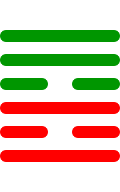

第三十七卦
家人卦

卦辞
利女贞。
家人卦象征家庭、家人与家道。卦辞意为：利于女子坚守正道。家人卦教导我们要重视家庭伦理，建立和谐的家庭关系。
彖传
家人，女正位乎内，男正位乎外。男女正，天地之大义也。家人有严君焉，父母之谓也。父父，子子，兄兄，弟弟，夫夫，妇妇，而家道正。正家而天下定矣。
彖传说：家人，女正位于内，男正位于外。男女正，是天地的大义。家有严君，是父母说的。父父，子子，兄兄，弟弟，夫夫，妇妇，而家道正。正家而天下定矣。
象传
风自火出，家人。君子以言有物，而行有恒。
象传说：风自火出，就是家人卦。君子应当效法这种精神，言有实物，行有恒常。风从火出象征家道，要言行一致。
爻辞
初九：闲有家，悔亡
闲有家，悔恨消亡。
初九爻位于最下方，防患未然。防闲家事，悔恨消亡，表示预先防范。
六二：无攸遂，在中馈，贞吉
无所成，在中馈，坚守正道吉祥。
六二爻得中得正，主内。无所成就，在家中主持饮食，坚守正道吉祥，表示女主内的职责。
九三：家人嗃嗃，悔厉吉。妇子嘻嘻，终吝
家人嗃嗃，悔恨危险吉祥。妇子嘻嘻，终困难。
九三爻阳刚得位，严格治家。家人严厉，悔恨危险但吉祥。妇子嬉笑，最终困难，表示严格为好。
六四：富家，大吉
富家，大吉祥。
六四爻接近君位，家庭富裕。家庭富裕，大吉祥，表示治家有方。
九五：王假有家，勿恤吉
王假有家，不要忧虑吉祥。
九五爻居中尊位，王者之家。王有家，不要忧虑吉祥，表示王者之家的和谐。
上九：有孚威如，终吉
有诚信威严，最终吉祥。
上九爻位于极点，威信并重。有诚信又有威严，最终吉祥，表示家长的威信。